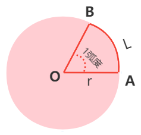
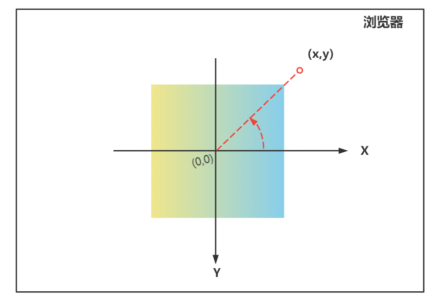

一、Math 对象
Math是一个内置对象，它拥有一些数学常数属性和数学函数方法。- 与其他全局对象不同的是，
Math不是一个构造器。即不能使用new关键字Math的所有属性与方法都是静态的以下是 Math 对象上的一些常用的方法和属性
| 属性 | 说明 |
|---|---|
| Math.PI | Math.PI 表示圆周率π，即一个圆的周长与直径的比例，约为 3.14159 |
| 方法 | 说明 |
|---|---|
| Math.pow(x,y) | 返回x的y次幂 |
| Math.sqrt(x) | 返回x的平方根 |
| Math.ceil(x) | 向上取整，返回大于等于x的最小整数 |
| Math.floor(x) | 向下取整，返回小于等于x的最大整数 |
| Math.round(x) | 返回x经过 4 舍 5 入后得到的最接近的整数 |
| Math.max(a,b,c,[..]) | 返回给定数值中的最大数 |
| Math.min(a,b,c,[..]) | 返回给定数值中的最小数 |
| Math.abs() | 返回一个数字的绝对值 |
| Math.random() | 生成一个（0-1）之间的随机数 |
| Math.atan2 | 返回从原点（0,0） 到 （x,y） 点的线段与 x 轴正方向之间的平面角度（弧度值） |
Math.PI 属性
Math.PI表示圆周率π，即一个圆的周长与直径的比例，约为3.14159
console.log(Math.PI); // 3.141592653589793Math.pow(x,y)
Math.pow(x,y)返回 x 的 y 次幂
console.log(Math.pow(2, 3)); // 8 2的3次幂为8Math.sqrt(x)
- 返回x的平方根
console.log(Math.sqrt(4)); // 2 console.log(Math.sqrt(9)); // 3Math.ceil
- 向上取整，返回大于等于 x 的最小整数
console.log(Math.ceil(2.2)); // 3 console.log(Math.ceil(2.0001)); // 3 console.log(Math.ceil(-2.1)); // -2 console.log(Math.ceil(0.909)); // 1Math.floor
- 向下取整，返回小于等于 x 的最大整数
console.log(Math.floor(2.2)); // 2 console.log(Math.floor(2.0001)); // 2 console.log(Math.floor(-2.1)); // -3 console.log(Math.floor(0.909)); // 0Math.round
- 返回
x经过四舍五入后得到的最接近的整数，只需要看x的小数部分与0.5的关系特别注意：当x是负数是，如果小数部分是 0.5，则返回值为x的整数部分
- 返回
console.log(Math.round(10.49)); // 10 console.log(Math.round(10.5)); // 11 console.log(Math.round(-10.49)); // -10 // 特殊情况，记下 console.log(Math.round(-10.5)); // -10 console.log(Math.round(-10.51)); // -11
- Math.max
- 返回给定数值中的最大数，如果任一参数不能转换为数值，则返回
NaN - 如果没有提供参数，返回
-Infinity
- 返回给定数值中的最大数，如果任一参数不能转换为数值，则返回
console.log(Math.max(1, 2, 3, 7)); // 7 console.log(Math.max()); // -Infinity console.log(Math.max(1, 2, "a")); // NaN
求数组中的最大值
var arr = [1, 20, 5, 6, 3, 9, 10]; var maxValue = Math.max.apply(null, arr); console.log(maxValue);
Math.min同样可以
- Math.min
- 返回给定数值中的最小数，如果任一参数不能转换为数值，则返回
NaN - 如果没有提供参数，返回
Infinity
console.log(Math.min(1, 2, 3, 7)); // 1 console.log(Math.min()); // -Infinity console.log(Math.min(1, 2, "a")); // NaN - 返回给定数值中的最小数，如果任一参数不能转换为数值，则返回
Math.max与Math.min常用于裁剪值
// 利用 Math.max和Math.min来实现比如:
- 元素的
left值只能在0 ~ 500之间，则我们可以利用Math.max和Math.min来对值做裁剪
var left = 300; left = left < 0 ? 0 : left; left = left > 500 ? 500 : left; console.log(left);
left = Math.max(left, 0);
left = Math.min(500, left);
console.log(left);- 元素的
Math.abs
- 返回一个数字的绝对值，如果不能转换的，则会转换为
NaN，能转的都会转换成对应的数字
console.log(Math.abs(-1)); // 1 console.log(Math.abs(-1.2)); // 1.2 console.log(Math.abs(null)); // 0 console.log(Math.abs(true)); // 1 console.log(Math.abs(false)); // 0 console.log(Math.abs(undefined)); // NaN console.log(Math.abs([-3])); // 3 console.log(Math.abs([2, -3])); // NaN console.log(Math.abs({})); // NaN- 返回一个数字的绝对值，如果不能转换的，则会转换为
Math.random
- 返回一个
0 ~ 1之间的随机数，不包括 0 和 1 - 返回指定范围
[a,b]之间的随机整数公式，包括 a 和 b：
Math.random() * (b - a + 1) + a;- 返回一个
// 随机生成 0-6之间的随机整数,包括0和6 var n = Math.floor(Math.random() * 7);
// 随机生成 [2,6]之间的随机整数
var n = Math.floor(Math.random() * (6 - 2 + 1) + 2);
// 随机生成[-5,5]之间的整数
var n = Math.floor(Math.random() * (5 - -5 + 1) - 5);
- Math.atan2
- 返回从原点
(0,0)到(x,y)点的线段与 x 轴正方向之间的平面角度（弧度值） - 假设圆的中心点为原点坐标
（0,0），即从原点到坐标（x,y）的线段与 x 轴正方向之间的角 θ 是一个负角（逆时针方向） - 旋转角度的正负，是由
y值决定的，y < 0得到负角，y > 0得到正角注意：这里的y轴与数学上的不一样；正值向下，负值向上；
- 返回从原点
Math.atan2(y, x); // 第一个参数是y坐标，第二个参数是x坐标
因为
Math.atan2(y,x)得到的是对应的弧度值，所以我们还需要将弧度值转换为对应的角度值- 弧度值转换成对应角度值的转换公式
- 角度 = 弧度 * (180/Math.PI)
- 角度 = 弧度 / (Math.PI/180)
rad1 = Math.atan2(-1, 1); deg1 = Math.atan2(-1, 1) * (180 / Math.PI); console.log(rad1, deg1); //-0.7853981633974483 -45
rad2 = Math.atan2(-1, -1);
deg2 = Math.atan2(-1, -1) * (180 / Math.PI);
console.log(rad2, deg2); //-2.356194490192345 -135
rad3 = Math.atan2(1, -1);
deg3 = Math.atan2(1, -1) * (180 / Math.PI);
console.log(rad3, deg3); //2.356194490192345 135
rad4 = Math.atan2(1, 1);
deg4 = Math.atan2(1, 1) * (180 / Math.PI);
console.log(rad4, deg4); //0.7853981633974483 45
- 扩展知识：弧度与角度的关系
- 角的度量单位通常有两种：一种是角度制，另一种是弧度制
- 弧度制：我们把长度等于半径长的弧所对的圆心角叫1 弧度的角。 弧度常用
rad表示 - 假设下图中圆的半径为 r ，弧 AB 的长为 L，如果L = r， 则
∠AOB = L/r = 1 弧度
1 弧度 = ?角度呢
1弧度 = 180deg/π 约为 57.2958279deg
推导过程
周长 = 2πr，周角 = 360deg
1弧度/360deg=L/2πr；因为L=r–>>
1弧度/360deg=r/2πr—>>
1弧度 = 180deg/π通过
1弧度 = 180deg/π得到
角度 = 弧度 * (180deg/π)
角度 = 弧度 / (π/180)
π = 180deg，2π = 360deg（弧度单位可以省略）
- 案例：元素跟随鼠标旋转
- 当鼠标旋转时，元素也会跟着一起旋转。
实现原理
- 首先，我们知道，鼠标的坐标是距离浏览器左侧和上面的距离，也就是说，原点在浏览器的左上角，鼠标只能在第四象限移动
- 而我们要旋转元素，必须在每个象限都能移动，所以，我们需要把鼠标的坐标轴原点移动到元素的中心点
- 我们需要获取到元素中心点与浏览器左边和上边的距离
- 然后获取到鼠标与浏览左边和上边的距离
- 最后用鼠标对应位置减去元素中心点与浏览器对应位置，得到的
x,y这样元素的中心点就相当于是(0,0)原点坐标，（x,y）就是Math.atan2(y,x)方法对应的x,y// box中心点与浏览器左边和上边距离 var centerX = box.offsetLeft + box.offsetWidth / 2; var centerY = box.offsetTop + box.offsetHeight / 2;
document.onmousemove = function (e) {
var clientY = e.clientY;
var clientX = e.clientX;
};
// 以元素的中心点为（0，0）坐标，来计算弧度值，最后转换为对应角度值
x = clientX - centerX;
y = clientY - centerY;
- 用(x,y)计算弧度值和角度控制元素的旋转角度：
transform:rotate(deg)var rad = Math.atan2(y, x); // 弧度值 var deg = rad * (180 / Math.PI); // 将弧度值转换为对应角度制
完整源码
<style> .box { width: 200px; height: 200px; background-image: linear-gradient(to right, khaki, skyblue); margin: 200px; /* transform-origin: top left; */ /*改变旋转中心点*/ } </style> <div class="box"></div> <script> var box = document.querySelector(".box"); // box中心点与浏览器左边和上边距离 var centerX = box.offsetLeft + box.offsetWidth / 2; var centerY = box.offsetTop + box.offsetHeight / 2;
// onmousemove事件
document.onmousemove = function (e) {
// 鼠标与浏览器左边和右边距离
var clientY = e.clientY;
var clientX = e.clientX;
// 得到鼠标与元素中心点的x和y坐标
x = clientX - centerX;
y = clientY - centerY;
// 以元素的中心点为（0，0）坐标，来计算弧度值，最后转换为对应角度值
var rad = Math.atan2(y, x);
var deg = rad * (180 / Math.PI);
// 控制元素的旋转角度
box.style.transform = "rotate(" + deg + "deg)";
};
二、Date 日期对象
- Date 日期对象主要是用来处理日期
- 以下是与星期相关的英文单词，可以记下来
星期 英文 缩写 星期一 Monday Mon 星期二 Tuesday Tue 星期三 Wednesday Wed 星期四 Thursday Thur 星期五 Friday Fri 星期六 Saturday Sat 星期七 Sunday Sun
- 以下是与月份相关的英文单词
月份 英文 简写 一月 January Jan 二月 February Feb 三月 March Mar 四月 April Apr 五月 May May 六月 June Jun 七月 July Jul 八月 August Aug 九月 September Sep 十月 October Oct 十一月 November Nov 十二月 December Dec
new Date() 创建日期对象
-
new Date()可以用来创建一个日期对象
- 它有四种使用方式：
new Date()- 没有提供任何参数，则返回结果为当前的日期和时间
console.log(new Date()); //Fri Aug 25 2023 17:11:59 GMT+0800 (中国标准时间)
new Date(value)value是一个时间戳，他是一个整数值，表示从1970 年 1 月 1 日 00:00:00UTC（the Unix epoch）开始算起的一个毫秒数。console.log(new Date(5000));//Thu Jan 01 1970 08:00:05 GMT+0800 (中国标准时间)
new Date(dateString);dateString表示一个日期字符串，其中2022-07-02这种格式的日期(-和两位数同时存在)会被处理成UTC，而不是本地时间(与中国相差八小时)- 该方法会把
dateString转化为：星期 月 日 年 时间的格式
console.log(new Date("2022-7-1")); //Fri Jul 01 2022 00:00:00 GMT+0800 console.log(new Date("2022/7/1")); //Fri Jul 01 2022 00:00:00 GMT+0800 console.log(new Date("2022-07-1")); //Fri Jul 01 2022 00:00:00 GMT+0800 console.log(new Date("2022-07-01")); //会被处理成UTC时间 Fri Jul 01 2022 08:00:00 GMT+0800new Date((year, monthIndex [, day [, hours [, minutes [, seconds [, milliseconds]]]]]);)- 分别提供日期和时间的每个成员，不过至少要提供年份与月份
- 如果没有提供的参数，日期默认值为
1，时，分，秒默认值为0注意事项：
monthIndex表示月份的整数值，从 0（1 月）到 11（12 月）year年份的整数值，0到99会被映射至1900年至1999年，其它值代表实际年份
console.log(new Date(2023, 8, 25, 17, 23)); //Mon Sep 25 2023 17:23:00console.log(new Date(“2023-08-25”)); //Fri Aug 25 2023 08:00:00
console.log(new Date(“2023/8/25”)); //Fri Aug 25 2023 00:00:00console.log(new Date(2023, 15, 25)); //Thu Apr 25 2024 00:00:00
console.log(new Date(2023, 8, 40)); //Tue Oct 10 2023 00:00:00
console.log(new Date(2023, 8, 25, 30)); //Tue Sep 26 2023 06:00:00
注意事项：
- 如果传入的是日期格式的字符串,它会自动转换格式；根据字符串的格式转换成UTC或者当地时间
- 当传入多个参数时，如果数值大于合理范围时，相邻的数值会被调整
- 月超出范围
2023, 15, 25：15-12=3,因为月份是0-11，所以是四月- 日超出范围
2023, 8, 40：会根据月份的长度调整，注意：月份的位置写的是8，那代表是9月，所以40-30=10，即10月10号- 时超出范围
-24，分秒超出范围-60
- 实践应用
- 获取上一个月共有多少天，比如获取 2022 年 9 月的上一个月有多少天
// 获取2022年9月的上一个月有多少天 var date = new Date(2022, 8, 0); // 2022年9月的第0天就是8月的最后一天 console.log(date); // Wed Aug 31 2022 00:00:00 GMT+0800 var prevMonthDayCount = date.getDate(); // 获取当前日期的天 console.log(prevMonthDayCount); // 31
- 获取当月一共有多少天，如比获取 2022 年 9 月一共有多少天
// 获取2022年9月一共有多少天 var date = new Date(2022, 9, 0); //2022年10月的第0天就是 2022年9月的最后一天 console.log(date); // Fri Sep 30 2022 00:00:00 GMT+0800 (中国标准时间) var prevMonthDayCount = date.getDate(); // 获取当前日期的天 console.log(prevMonthDayCount); // 30
- 扩展
UTC：
- 也就是我们所说的格林威治时间，指的是
time中的世界时间标准 - JavaScript的时间由世界标准时间（UTC）
1970 年 1 月 1 日开始，用毫秒计时，一天由86,400,000毫秒组成
本地（当地）时间 - 是指执行 JavaScript 的客户端电脑所设置的时间
- 也就是我们所说的格林威治时间，指的是
日期格式化方法
以下方法只需要了解即可
方法 说明 toString() 返回一个字符串，以本地的时间表示当前的时间 toLocaleString() 根据当地语言规定返回代表着时间的字符串 toLocaleDateString() 根据当地语言规定返回代表着日期的字符串 toLocaleTimeString() 根据当地语言规定返回代表着时分秒的字符串 var date = new Date(); console.log(date); // Thu Aug 08 2022 22:21:58 GMT+0800 (中国标准时间) console.log(date.toString()); // Thu Aug 08 2022 22:21:58 GMT+0800 (中国标准时间) console.log(date.toLocaleString()); // 2022/8/8 22:21:58 console.log(date.toLocaleDateString()); // 2022/8/8 console.log(date.toLocaleTimeString()); // 22:21:58
日期对象常见方法
如果我们想获取日期的指定部分，如：年，月，日，星期，时，分，秒等中的某个部分,则可以使用下面提供的方法
| 方法 | 说明 |
|---|---|
| getFullYear() | 根据本地时间，返回具体时间中的** 年份** |
| getMonth() | 根据本地时间，返回具体时间中的 月份 0-11 表示 1-12 月 |
| getDate() | 根据本地时间，返回具体时间中的日（天） |
getDay() 根据本地时间，返回具体时间中的星期，0-6 表示星期天，一，二，三，… 六 |
|
| getHours() | 根据本地时间，返回具体时间中的 时 |
| getMinutes() | 根据本地时间，返回具体时间中的 分钟数 |
| getSeconds() | 根据本地时间，返回具体时间中的 秒数 |
| getMilliseconds() | 根据本地时间，返回具体时间中的 毫秒数 |
- 以 “2023 年 09 月 08 日 12 时 04 分 05 秒 星期四” 格式输出对应的日期
var d = new Date(); var year = d.getFullYear(); var month = d.getMonth() + 1; var date = d.getDate(); var day = d.getDay(); var hours = d.getHours(); var minutes = d.getMinutes(); var seconds = d.getSeconds();
// 对日期不足两位的补0操作
month = padZero(month);
date = padZero(date);
hours = padZero(hours);
minutes = padZero(minutes);
seconds = padZero(seconds);
var week = [
“星期天”,
“星期一”,
“星期二”,
“星期三”,
“星期四”,
“星期五”,
“星期六”,
];
console.log(
year +
“年” +
month +
“月” +
date +
“天 “ +
hours +
“时” +
minutes +
“分” +
seconds +
“秒 “ +
week[day]
);
// 输出结果格式： 2023年09月08天 23时12分16秒 星期四
// 补0
function padZero(str) {
str = str + “”;
return str.padStart(2, “0”);
}
时间戳
- 时间戳：表示 1970 年 1 月 1 日零点整距离某时刻的毫秒数
getTime方法：可以把对应的日期时间转换为对应的时间戳//得到此时距1970 年 1 月 1 日零点整的毫秒数 var d1 = new Date(); console.log(d1.getTime()); //1692958123935 //得到2023/8/26 距1970 年 1 月 1 日零点整的毫秒数 var d2 = new Date("2023 / 8 / 26"); console.log(d2.getTime()); //1692979200000
应用：利用 getTime 方法，可以测试代码的执行时间
var start = new Date(); for (var i = 0; i < 1000; i++) { console.log(i); } var end = new Date(); // 代码执行时间，为两者时间之差（毫秒数） var time = end.getTime() - start.getTime(); console.log("代码执行时间" + time + "毫秒"); // 代码执行时间20毫秒将一个日期转换为对应的时间戳 ，还有以下 4 种方法
时间戳方法 说明 日期对象.getTime() 可以把对应的日期时间转换为对应的时间戳 日期对象.valueOf方法 返回 Date 对象的原始值，其功能和 getTime +日期对象 这种是一种技巧，利用+号的特性，底层调用的是 valueOf 方法 Date.parse(“”)方法 静态方法，返回传递的日期的时间戳 Date.now() 方法 静态方法 返回当前的日期的时间戳
var d = new Date(2022, 9, 9); console.log(d.valueOf()); // 1665244800000 console.log(d.getTime()); // 1665244800000 console.log(+d); // 1665244800000
console.log(Date.now()); // 1665244823500
console.log(Date.parse(“2022-9-1”)); // 本地时间 1661961600000
console.log(Date.parse(“2022/9/1”)); // 本地时间 1661961600000
console.log(Date.parse(“2022-09-01”)); // UTC 1661990400000
Date.parse()方法传入日期必须用引号包裹，并且根据不同的日期格式会返回UTC或者本地时间- 其他方法，如果在
new Date()里传入字符串格式的日期，根据不同的日期格式也会返回UTC或者本地时间
案例：活动倒计时
涉及知识点
- 定时器
- Date 对象、getTime() 方法
- 倒计时原理： 时间戳如何转换为对应的天数，小时，分钟，秒数
CSS布局
<style> .countDown { position: relative; width: 190px; height: 260px; background-image: url(../src/miaosha.png); margin: 100px; } .countDown .title { font-size: 30px; text-align: center; padding-top: 50px; color: #fff; font-weight: bold; } .countDown .main { position: absolute; bottom: 50px; width: 100%; height: 30px; text-align: center; font-size: 0; } .countDown .main span { position: relative; display: inline-block; width: 30px; height: 30px; margin: 0 8px; font-size: 20px; color: #fff; background-color: #000; } .main span::after { position: absolute; top: 0; right: -10px; content: ":"; display: block; } .main span.second::after { content: ""; } </style> <div class="countDown" id="J-countDown"> <!-- <div class="title">京东秒杀</div> <div class="main"> <span class="hour">00</span> <span class="minute">00</span> <span class="second">00</span> </div> --> </div>JS实现思路
- 倒计时需要三个时间：当前时间，活动开始时间，活动结束时间
- 活动没有开始前，活动版块不会出现在页面中；活动结束后，活动版块要在页面中删除
当前时间 >= 活动开始时间，表示当前活动正在进行，开始倒计时功能
倒计时实现原理
利用活动结束时间戳 - 当前时间戳 ，得到的剩余时间（毫秒）
把
剩余时间（毫秒）/ 1000得到对应的秒数，然后将秒数转换为对应的天、时、分、秒然后利用定时器，每过1秒钟就更新下时间
秒数转换成天、时、分、秒公式
我们知道 1天 = 24小时，1小时 = 60分，1分 = 60秒，如果当前为 n 天，则
总秒数 = n * 60 * 60 * 24天数：
day = parseInt(总秒数 / 24 / 60 / 60)小时：
hour = parseInt(总秒数 / 60 / 60 % 24 )如果不考虑天数，也就是所有天数的时间也按小时来算，
hour=parseInt(总秒数 / 60 / 60 )分钟：
minutes=parseInt(总秒数 / 60 % 60)秒数：
secondes=parseInt(总秒数 % 60)
实现步骤
- 第一步：创建DOM元素，添加到页面
- 第二步：创建 countDown 函数
- 这个函数有两个参数，分别代表开始时间和结束时间，只要调用这个函数，传入对应实参，就能实现倒计时功能
- 第三步：完善 countDown 函数功能
- 检测是否传了两个参数
- 传的类型是否是时间对象
- 是否满足
endDate大于startDate - 如果不满足以上条件，则直接抛出对应的错误
- 同时开始定时器，每隔
1秒更新下时间，实现倒计时功能,每隔一秒就检查活动是否开始/结束。
- 第四步：判断活动是否结束
如果当前时间 > 活动结束时间，则表明活动结束，将活动版块从页面移除
- 第五步：判断活动是否开始
- 如果
活动开始时间 > 当前时间，则表示活动开始，在活动版块插入页面中（显示） - 用
活动结束时间戳 - 当前时间戳得到的毫秒数，转换成秒。 - 最后将秒数，换算成对应时，分，秒，更新到页面中
- 如果
- 第六步：优化细节
- 如果时，分没有变化，则不需要再次更新
DOM，只有不相同时，才需要更新DOM - 创建一个对象，用来前面的时，分，然后拿 对象中的时，分与现在的对比，如果不相同则更新 DOM，同时把自身的值也更新为最新的，否则啥也不做
- 用户刚打开页面，活动已经开始了，则需要立马显示倒计时，而不用等到 1 秒后，才开始显示元素，然后显示对应时间
- 所以把定时器需要执行的代码封装到函数
upDate中，然后在定时器之前，先调用下upDate函数
- 如果时，分没有变化，则不需要再次更新
完整 js代码
<script> var count = document.getElementById("J-countDown"); //创建DOM元素，并插入到页面中 var frag = document.createDocumentFragment(); var title = document.createElement("div"); title.innerText = "京东秒杀"; var main = document.createElement("div"); var span1 = document.createElement("span"); var span2 = document.createElement("span"); var span3 = document.createElement("span"); title.classList.add("title"); main.classList.add("main"); span1.classList.add("hour"); span2.classList.add("minute"); span3.classList.add("second"); main.appendChild(span1); main.appendChild(span2); main.appendChild(span3); frag.appendChild(title); frag.appendChild(main); count.appendChild(frag); /** * countDown 倒计时函数 * @param startDate 开始时间，日期对象 * @param endDate 结束时间，日期对象 */ function countDown(startDate, endDate) { //判断是否同时传了两个参数 if (startDate === undefined || endDate === undefined) throw new Error("必须同时传入两个日期，作为活动的开始时间和结束时间"); //判断传入的是日期对象 if (!startDate instanceof Date || !endDate instanceof Date) throw new Error("必须传入两个正确的日期对象"); //判断是否结束日期大于起始日期 if (startDate.getTime() >= endDate.getTime()) throw new Error("结束日期必须大于起始日期");// 用来记录前前面时，分
var time = {
hour: “00”,
minute: “00”,
};
var timer = setInterval(upDate, 1000);
upDate(); // 进来就调用更新时间的函数
function upDate() {
//判断活动是否结束
var nowDate = new Date();
if (nowDate.getTime() > endDate.getTime()) {
//活动结束，将元素从页面删除
count.parentNode.removeChild(“count”);
clearInterval(timer);
}
//判断活动是否开始
if (nowDate.getTime() >= startDate.getTime()) {
//倒计时
var timeDiff = (endDate.getTime() - nowDate.getTime()) / 1000;
var hour = parseInt(timeDiff / 60 / 60);
var minute = parseInt((timeDiff / 60) % 60);
var second = parseInt(timeDiff % 60);
// 更新DOM元素,对于不足两位的数，前面补0,
if (time.hour != hour) {
span1.innerText = (hour + “”).padStart(2, “0”);
time.hour = hour;
}
if (time.minute != minute) {
span2.innerText = (minute + "").padStart(2, "0");
time.minute = minute;
}
span3.innerText = (second + "").padStart(2, "0");
}
}
}
var startDate = new Date(“2023/8/25”);
var endDate = new Date(“2023/8/27”);
countDown(startDate, endDate);
案例-手写日历组件
- 布局思路
- 其中
calendar-main中的内容，是重点渲染的内容，后期通过 JS 动态生成
- 其中
- HTML布局
<div class="calendar"> <!-- calendar-menu start --> <div class="calendar-menu"> <span class="prev-year"><<</span> <span class="prev-month"><</span> <span class="current-date">2022年12月</span> <span class="next-month">></span> <span class="next-year">>></span> </div> <!--end calendar-menu --> <!-- calendar-week start --> <div class="calendar-week table"> <div class="tr"> <div class="th">一</div> <div class="th">二</div> <div class="th">三</div> <div class="th">四</div> <div class="th">五</div> <div class="th">六</div> <div class="th">日</div> </div> </div> <!-- end calendar-week --> <!-- calendar-main start --> <div class="calendar-main"> <div class="table"> <div class="tr"> <div class="td prev-month">28</div>
<div class="td prev-month">29</div> <div class="td prev-month">30</div> <div class="td">1</div> <div class="td">2</div> <div class="td">3</div> <div class="td">4</div>